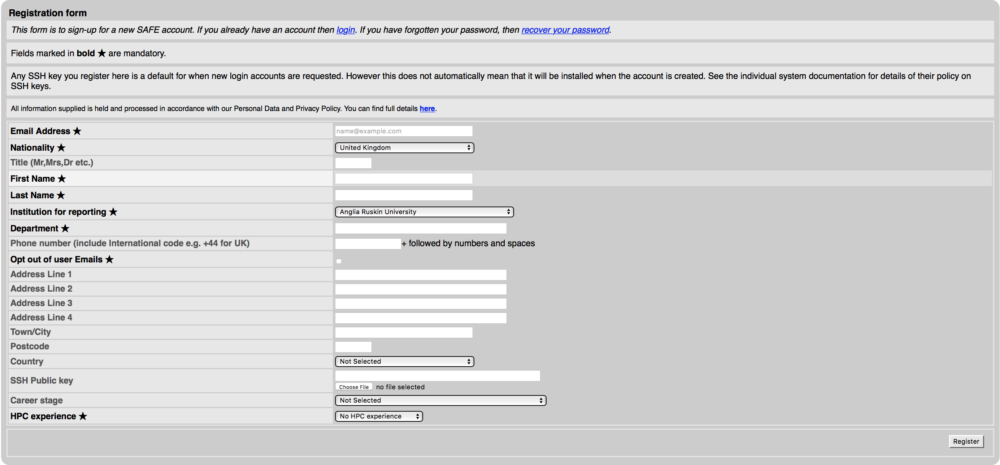
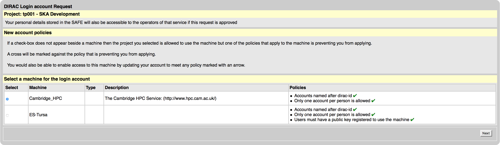

Signing up for IRIS Resources¶
IRIS resources What_is_IRIS
Signing up to Galahad¶
To get access to Galahad, please contact Anthony Holloway (email: anthony.holloway[at]manchester.ac.uk). A short introduction to Galahad will be provided (eg. ‘home’ and ‘working’ folders, accessing and loading available modules etc.)
Signing up for Dirac/SAFE¶
Registering on SAFE
Registering on DiRAC
Logging on to Cambridge HPC
DiRAC is funded by the STFC and provides High Performance Computing (HPC) facilities. At present DiRAC HPC facilities are hosted at Cambridge, Durham, Edinburgh and Leicester Universities.
This document describes how to register to use the DiRAC HPC facility hosted at the University of Cambridge. The Cambridge HPC is described in detail here. In order to use the Cambridge HPC facility users must first register on SAFE before applying for a DiRAC account.
Registering on SAFE¶
Go to the SAFE New User Signup Form
The SAFE registration screen
Fill in your details
Click “Register” and (assuming you wish to continue) accept the terms and conditions
You will then be emailed a link allowing you to complete registration for SAFE and choose a password
{kind=link}
After registering, should you need to change any of your details, go to SAFE and sign in using your email address and password.
Registering on DiRAC¶
In order to register on DiRAC you must first have a SAFE account as described in Registering on SAFE. Registering for the Cambridge HPC will grant access to both Central Processing Unit (CPU) and Graphics Processing Unit (GPU) architectures. The CPU is designed to run quickly and handle a wide range of tasks but has limited concurrency whereas the GPU is designed to optimise rendering of images and can perform multiple parallel operations.
If not already logged in, log in to your SAFE account here
Go to the Request login account page
Enter the project code
tp001and click “Next”Select
Cambridge_HPCand click “Next”The DiRAC account request screen
The next screen displays the username that will be assigned to you, make a note of this and click “Request”.
You will receive an email once your request has been approved
{kind=link}
Logging on to Cambridge HPC¶
In order to log on to the HPC for the first time find your password for the Cambridge HPC by logging in to your SAFE account here (if not already logged in)
Under the “Login Accounts” heading select “(username)@Cambridge_HPC” where username should be replaced with the name supplied during the DiRAC registration process. Click the button labelled “View Login Account Password” and make a note of the password displayed
Open a terminal command prompt and, replacing username with the name supplied during the DiRAC registration process, enter the following to access the CPU:
(host) $ ssh (username)@login.hpc.cam.ac.uk
or enter the following to access the GPU
(host) $ ssh (username)@login-gpu.hpc.cam.ac.uk
When logging in to the CPU, if asked to accept one of the following fingerprints, type
yes- MD5:eb:e3:a1:f0:64:68:cf:9c:63:da:84:db:2e:ee:15:83
- SHA256:nFVSXK+VRGCaUupQEdhXz06kp01m2fzzmbgPr0sc2so
or when logging in to the GPU, if asked to accept one of the following fingerprints, type
yes- MD5:fd:5c:6b:7d:49:95:2f:da:7f:5c:50:9a:bb:ef:3f:24
- SHA256:2rl+MXd9rsrDzFZwEItmhhiHTlLTIqN0d3TSGLTgjTI
After accepting the fingerprint your computer will remember it when logging on in the future.
After logging in the first time you will be asked to choose a new password. This password will then be used for logging in to both CPU and GPU. Your password will not be visible in your SAFE account.
Your account has a storage allocation of 40GB in your home directory. Snapshots of your home directory are taken hourly/daily/weekly. If you delete a file by accident go to /home/.zfs/snapshot and browse the appropriate snapshot for the file which can then be copied back to your home directory.
Signing up to IRIS through certificate¶
Introduction
- get a grid certificate
- join VO (Virtual Organisation)
- access DIRAC in browser
- install DIRAC UI
- submit a job (python –version)
- monitor a job
- put data on the file catalog
- submitting RASCIL job
- get output data RASCIL job
- useful links
Get A Grid Certificate
- a grid certificate is a .p12 file
- Using your browser of choice visit this page and select the Request New User Certificate option. This almost goes without saying, but make sure you supply a valid email address which you can access. You will also be asked to do things like supply a PIN and passwords that you will need later on, so make sure you write everything down!
- You will need to select a Registration Authority (RA) as part of this process.You may also be asked to supply a letter of recommendation explaining why you need to use the grid and with whom you will be working.
- Details at grid_certificate
Join a VO
- Your grid certificate identifies you to the grid as an individual user, but it’s not enough on its own to allow you to use grid resources; you also need to join a Virtual Organisation (VO).
- Note: I have made my request to skatelescope.eu - see Approved_Global_VOs
- add the certificate to your browser and use the below link to register register_for_a_VO
Access DIRAC in browser
- Now that you have the certificate and have joined to VO, you can add certificate to your browser and access DIRAC in browser DIRAC_in_browser
- More details about DIRAC at Guide to DIRAC Guide_to_DIRAC
DIRAC in Browser
Before DIRAC install¶
Overview of directories on your server
/home/<your-user> - home directory
/raid/scratch/<your-user> - a working directory, here DIRAC will be installed
FC:/............................ - belongs to IRIS, can store large data. You need DIRAC installation to
be able to copy files to FC:/ (IRIS)
DIRAC install¶
Step 1:
- Switch to bash eg
bash-4.2$ cat .bash_profile
#switch to bash
setenv SHELL /usr/bin/bash
exec /usr/bin/bash --login
bash-4.2$ /raid/scratch/<your-user> > mkdir dirac_ui
bash-4.2$ /raid/scratch/<your-user> > cd dirac_ui/
bash-4.2$ /raid/scratch/<your-user>/dirac_ui > mkdir $HOME/.globus
bash-4.2$ /raid/scratch/<your-user>/dirac_ui >ls
certBundle.p12
#make sure you have the cert in this folder dirac_ui, eg certBundle.p12
Step 2:
bash-4.2$ /raid/scratch/<your-user>/dirac_ui > openssl pkcs12 -in certBundle.p12 -clcerts -nokeys -out $HOME/.globus/usercert.pem
Enter Import Password:
MAC verified OK
bash-4.2$ /raid/scratch/<your-user>/dirac_ui > openssl pkcs12 -in certBundle.p12 -nocerts -out $HOME/.globus/userkey.pem
Enter Import Password:
MAC verified OK
Enter PEM pass phrase:
Verifying - Enter PEM pass phrase:
bash-4.2$ /raid/scratch/<your-user>/dirac_ui > chmod 0400 $HOME/.globus/userkey.pem
Step 3:
bash-4.2$ /raid/scratch/<your-user>/dirac_ui > wget -np -O dirac-install https://raw.githubusercontent.com/DIRACGrid/management/master/dirac-install.py --no-check-certificate
bash-4.2$ /raid/scratch/<your-user>/dirac_ui > chmod u+x dirac-install
bash-4.2$ /raid/scratch/<your-user>/dirac_ui > ./dirac-install -r v7r1p45
Step 4:
bash-4.2$ /raid/scratch/<your-user>/dirac_ui > source bashrc
bash-4.2$ /raid/scratch/<your-user>/dirac_ui > dirac-proxy-init -x -N
Generating proxy...
Enter Certificate password:
bash-4.2$ /raid/scratch/<your-user>/dirac_ui > export X509_VOMS_DIR="$DIRAC/etc/grid-security/vomsdir"
bash-4.2$ /raid/scratch/<your-user>/dirac_ui > export X509_VOMSES="$DIRAC/etc/grid-security/vomses"
bash-4.2$ /raid/scratch/<your-user>/dirac_ui > dirac-configure -F -S GridPP -C dips://dirac01.grid.hep.ph.ic.ac.uk:9135/Configuration/Server -I
bash-4.2$ /raid/scratch/<your-user>/dirac_ui > dirac-proxy-init -g skatelescope.eu_user -M -U
#skatelescope.eu it is the VO I am assigned to
Generating proxy...
Enter Certificate password: